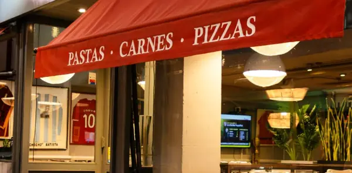
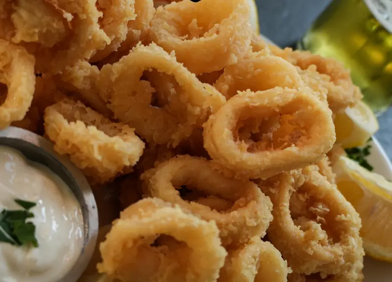
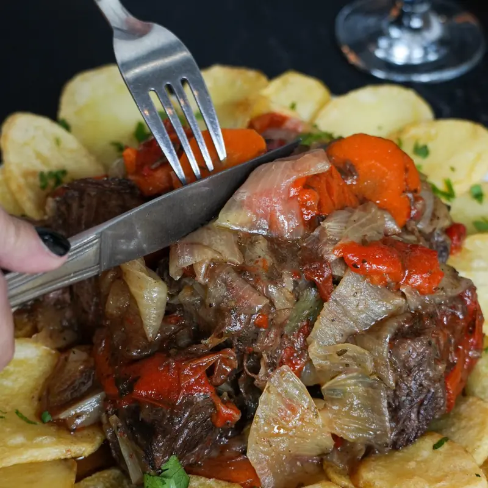
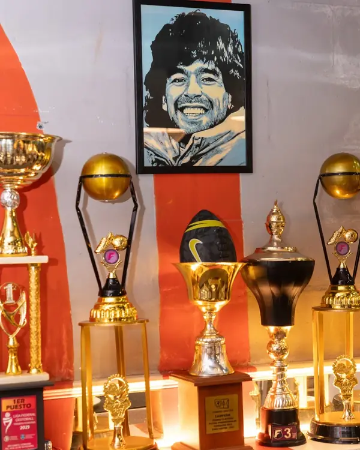
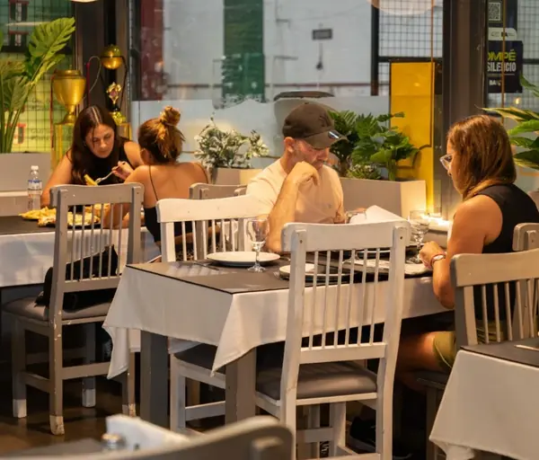
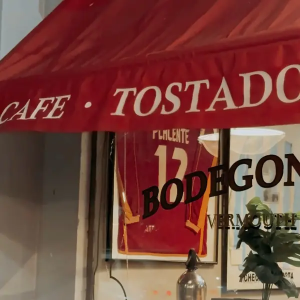
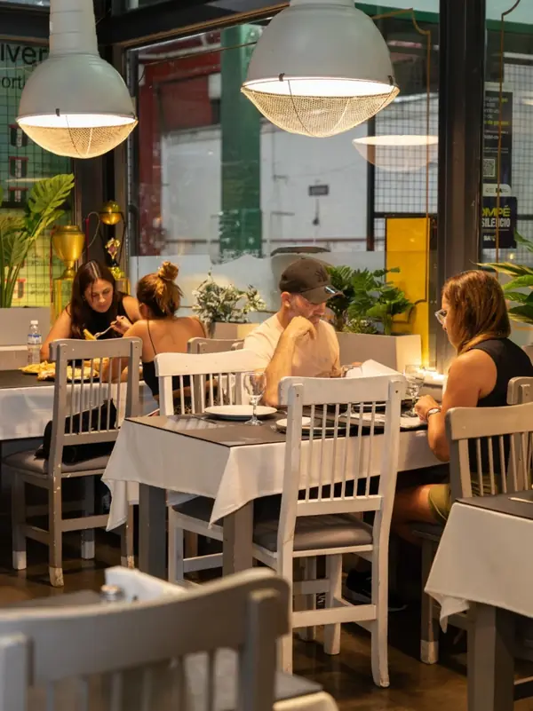

el bodegón del Club Parque
Somos tradición,somos barrio.
El bodegón de siempre como nunca antes: carta completa, menú ejecutivo de martes a viernes, cena show los sábados y take away.



Club Parque · Villa del Parque
Cuna de cracks
Bodegón Parque es el espacio gastronómico del histórico Club Parque. Un club de barrio que arrancó con el básquet y en los 70 convirtió sus canchas en canchitas de baby fútbol, donde Ramón Maddoni formó a una generación entera de cracks.
De acá salieron ídolos como Riquelme y Tévez, y cuatro campeones del mundo: Batista y Borghi en México 86, Paredes y Mac Allister en Qatar 2022. Y en uno de sus bailes de carnaval, Diego conoció a Claudia.
Hoy las paredes del bodegón cuentan esa historia: copas, trofeos y camisetas enmarcadas, mientras llegan a la mesa los platos de siempre.

El álbum del club
Pasá el mouse y hacé clic para dar vuelta cada figurita.Deslizá y tocá cada figurita para darla vuelta.
Los titulares de la casa
La formación de la casa
Pasá el mouse por cada jugador y hacé clic para ver el plato.Tocá cada jugador para ver el plato. El 10, como corresponde, es la Milanesa Parque.
La carta
Platos abundantes y recetas caseras. Todo sale también para llevar: sumalo y lo pasás a buscar.
Cargando la carta…
Menú ejecutivo
Al mediodía se come bien, rico y sin vueltas. Elegí tu plato:
Plato + bebida y postre
A confirmar
Martes a viernes al mediodía · todos los medios de pago
Sumá el plato del día con “+” y lo retirás en el bodegón.
Sábados a la noche
Cena show en vivo
Música en vivo desde las 21:30, el salón lleno y las porciones de siempre. Los cupos vuelan: sacá tu entrada.
Pedilo y pasalo a buscar
Armá tu pedido acá, sale por WhatsApp y entra directo a la cocina. El bodegón te confirma el precio y la hora.
El salón
Mesas largas, mantel blanco y las paredes llenas de fútbol. Arrastrá las fotos.Pasá las fotos con el dedo.



Dónde jugamos
Marcos Sastre 3258 · adentro del Club Parque, Villa del Parque (CABA)
Reservas y pedidos: 11 6853-5207 · Take away: 11 7562-0526